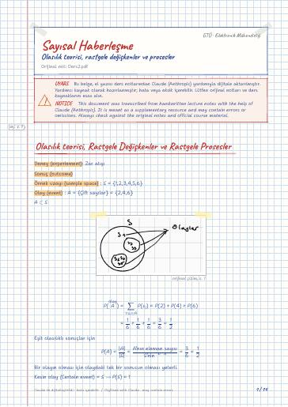

Sayısal Haberleşme · Dijital ders notu
Olasılık teorisi, rastgele değişkenler ve prosesler
- Ders
- Sayısal Haberleşme (ELM365)
- Dönem
- 6. Dönem · 2023–2024 Bahar
- Biçim
- PDF · 14 sayfa · 0,3 MB · el yazısı görünümlü LaTeX
- Orijinal not
- Ders2.pdf

The digital notes were created from the handwritten notes with the help of Claude (Anthropic); they are meant as a supplementary resource and may contain errors. Always rely on the original notes and the official course materials.
Bu notta neler var?
- Olasılık teorisi, Rastgele Değişkenler ve Rastgele Prosesler
- Rastgele Değişken (RD)
- Olasılık Dağılım Fonksiyonu (ODF)
- Olasılık Yoğunluk Fonk. (OYF)
- Düzgün Dağılım (Uniform distribution)
- Normal Dağılım (Gauss)
- Standart Gauss Dağılımı
- Beklenen Değer (Expectation)
- karekteristik fonk
- Rastgele Prosesler (Random, stochastic)
- Stasyonerlik
- Özellikler
- GYF
- Beyaz Gürültü RP
- LZD sistemler
- İşaretler ve Sistemler
Notun metni
Düz metin olarak göster (formüller ve çizimler yoktur)
Olasılık teorisi, Rastgele Değişkenler ve Rastgele Prosesler
Deney (experiement): Zar atışı
Eşit olasılıklı sonuçlar için
Bir olayın olması için olaydaki tek bir sonucun olması yeterli.
Kesin olay (Certain event) =S → P(S)=1
İmkansız olay (Impossible event) = → P()=0
A'= a S, a A uzayın A dışındaki tüm elemanlar
Rastgele Değişken (RD)
x : X RD'nin belli bir değeri.
Olasılık Dağılım Fonksiyonu (ODF)
Cumulative Distribution function - CDF
Azalmayan fonksiyon (Nondecreasing function)
Olasılık Yoğunluk Fonk. (OYF)
Probability Density Function (PDF)
Bir rastgele değişkenin belli bir bölgede olmasının olasılığını, altında kalan alanla gösteren fonksiyona denir.
azalmayan fonksiyonun türevi pozitiftir
Düzgün Dağılım (Uniform distribution)
Normal Dağılım (Gauss)
μ_X : ortalama değer (mean)
Standart Gauss Dağılımı
Beklenen Değer (Expectation)
X'in beklenen değeri (ortalaması)
e^ω x olduğunda moment üreten fonksiyon deniyor
Moment üreten fonk (MÜF):
Örnek: Düzgün dağılım
Rastgele Prosesler (Random, stochastic)
örnek fonksiyonlar topluluğu.
RP'in özilişki (auto correlation) fonk
– Sıkı Stasyoner (SS) : Bütün momentler zamana bağlı değil
Strict sense stationary (SSS)
– Gevşek Stasyoner (GS) : ilk 2 moment zamana bağlı değil
Wide sense stationary (WSS)
Bir RP aşağıdaki şartları sağlıyorsa GS'dir
Process SS ⇒ GS
Gauss RP sağlar
Haberleşme sistemlerinde GS önemli:
R_X(0)≥|R_X(τ)| complex sayılar için
Rastgele Processler Güç işaretleridir burda istatistiksel ortalama alınıyor
GYF güç yoğunluk fonksiyonu
RP Güç işareti → GYF, S_X(f)
Prosesin ortalama gücü
Reel değerli X(t) RP için S_X(-f)=S_X(f)
Beyaz Gürültü RP
(White Noise RP)
Gerçekte gücü sonsuz güce sahip işaret yok
Bütün frekanslarda olduğu için Beyaz gürültü denir.
Alıcı alırken z pozitif mi negatif mi diye bakıyor
s(t) pozitifken z(t) 'nin negatif olma olasılığını
bulup toplayıp ikiye bölerek yapıyor
İşaretler ve Sistemler
(-T/2, T/2) arasında harcanan enerji